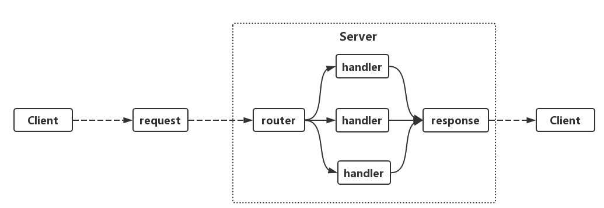

前言
对于Golang来说，实现一个简单的http server非常容易，只需要短短几行代码。同时有了协程的加持，Go实现的http server能够取得非常优秀的性能。这篇文章将会对go标准库net/http实现http服务的原理进行较为深入的探究，以此来学习了解网络编程的常见范式以及设计思路。
HTTP服务
基于HTTP构建的网络应用包括两个端，即客户端(Client)和服务端(Server)。两个端的交互行为包括从客户端发出request、服务端接受request进行处理并返回response以及客户端处理response。所以http服务器的工作就在于如何接受来自客户端的request，并向客户端返回response。
典型的http服务端的处理流程可以用下图表示：

服务器在接收到请求时，首先会进入路由(router)，这是一个Multiplexer，路由的工作在于为这个request找到对应的处理器(handler)，处理器对request进行处理，并构建response。Golang实现的http server同样遵循这样的处理流程。
我们先看看Golang如何实现一个简单的http server：
package mainimport ( “fmt” “net/http”)func indexHandler(w http.ResponseWriter, r http.Request) { fmt.Fprintf(w, “hello world”)}func main() { http.HandleFunc(“/“, indexHandler) http.ListenAndServe(“:8000”, nil)}运行代码之后，在浏览器中打开localhost:8000就可以看到hello world。这段代码先利用http.HandleFunc在根路由/上注册了一个indexHandler, 然后利用http.ListenAndServe开启监听。当有请求过来时，则根据路由执行对应的handler函数。
我们再来看一下另外一种常见的http server实现方式：
package mainimport ( “fmt” “net/http”)type indexHandler struct { content string}func (ih indexHandler) ServeHTTP(w http.ResponseWriter, r http.Request) { fmt.Fprintf(w, ih.content)}func main() { http.Handle(“/“, &indexHandler{content: “hello world!”}) http.ListenAndServe(“:8001”, nil)}Go实现的http服务步骤非常简单，首先注册路由，然后创建服务并开启监听即可。下文我们将从注册路由、开启服务、处理请求这几个步骤了解Golang如何实现http服务。
注册路由
http.HandleFunc和http.Handle都是用于注册路由，可以发现两者的区别在于第二个参数，前者是一个具有func(w http.ResponseWriter, r http.Requests)签名的函数，而后者是一个结构体，该结构体实现了func(w http.ResponseWriter, r http.Requests)签名的方法。http.HandleFunc和http.Handle的源码如下：
func HandleFunc(pattern string, handler func(ResponseWriter, Request)) { DefaultServeMux.HandleFunc(pattern, handler)}// HandleFunc registers the handler function for the given pattern.func (mux ServeMux) HandleFunc(pattern string, handler func(ResponseWriter, Request)) { if handler == nil { panic(“http: nil handler”) } mux.Handle(pattern, HandlerFunc(handler))}func Handle(pattern string, handler Handler) { DefaultServeMux.Handle(pattern, handler)}可以看到这两个函数最终都由DefaultServeMux调用Handle方法来完成路由的注册。这里我们遇到两种类型的对象：ServeMux和Handler，我们先说Handler。
Handler
Handler是一个接口：
type Handler interface { ServeHTTP(ResponseWriter, Request)}Handler接口中声明了名为ServeHTTP的函数签名，也就是说任何结构只要实现了这个ServeHTTP方法，那么这个结构体就是一个Handler对象。其实go的http服务都是基于Handler进行处理，而Handler对象的ServeHTTP方法也正是用以处理request并构建response的核心逻辑所在。
回到上面的HandleFunc函数，注意一下这行代码：
mux.Handle(pattern, HandlerFunc(handler))可能有人认为HandlerFunc是一个函数，包装了传入的handler函数，返回了一个Handler对象。然而这里HandlerFunc实际上是将handler函数做了一个类型转换，看一下HandlerFunc的定义：
type HandlerFunc func(ResponseWriter, Request)// ServeHTTP calls f(w, r).func (f HandlerFunc) ServeHTTP(w ResponseWriter, r Request) { f(w, r)}HandlerFunc是一个类型，只不过表示的是一个具有func(ResponseWriter, Request)签名的函数类型，并且这种类型实现了ServeHTTP方法（在ServeHTTP方法中又调用了自身），也就是说这个类型的函数其实就是一个Handler类型的对象。利用这种类型转换，我们可以将一个handler函数转换为一个Handler对象，而不需要定义一个结构体，再让这个结构实现ServeHTTP方法。读者可以体会一下这种技巧。
ServeMux
Golang中的路由（即Multiplexer）基于ServeMux结构，先看一下ServeMux的定义：
type ServeMux struct { mu sync.RWMutex m map[string]muxEntry es []muxEntry // slice of entries sorted from longest to shortest. hosts bool // whether any patterns contain hostnames}type muxEntry struct { h Handler pattern string}这里重点关注ServeMux中的字段m，这是一个map，key是路由表达式，value是一个muxEntry结构，muxEntry结构体存储了对应的路由表达式和handler。
值得注意的是，ServeMux也实现了ServeHTTP方法：
func (mux ServeMux) ServeHTTP(w ResponseWriter, r Request) { if r.RequestURI == ““ { if r.ProtoAtLeast(1, 1) { w.Header().Set(“Connection”, “close”) } w.WriteHeader(StatusBadRequest) return } h, _ := mux.Handler(r) h.ServeHTTP(w, r)}也就是说ServeMux结构体也是Handler对象，只不过ServeMux的ServeHTTP方法不是用来处理具体的request和构建response，而是用来确定路由注册的handler。
注册路由
搞明白Handler和ServeMux之后，我们再回到之前的代码：
DefaultServeMux.Handle(pattern, handler)这里的DefaultServeMux表示一个默认的Multiplexer，当我们没有创建自定义的Multiplexer，则会自动使用一个默认的Multiplexer。
然后再看一下ServeMux的Handle方法具体做了什么：
func (mux ServeMux) Handle(pattern string, handler Handler) { mux.mu.Lock() defer mux.mu.Unlock() if pattern == “” { panic(“http: invalid pattern”) } if handler == nil { panic(“http: nil handler”) } if _, exist := mux.m[pattern]; exist { panic(“http: multiple registrations for ” + pattern) } if mux.m == nil { mux.m = make(map[string]muxEntry) } // 利用当前的路由和handler创建muxEntry对象 e := muxEntry{h: handler, pattern: pattern} // 向ServeMux的map[string]muxEntry增加新的路由匹配规则 mux.m[pattern] = e // 如果路由表达式以’/‘结尾，则将对应的muxEntry对象加入到[]muxEntry中，按照路由表达式长度排序 if pattern[len(pattern)-1] == ‘/‘ { mux.es = appendSorted(mux.es, e) } if pattern[0] != ‘/‘ { mux.hosts = true }}Handle方法主要做了两件事情：一个就是向ServeMux的map[string]muxEntry增加给定的路由匹配规则；然后如果路由表达式以‘/‘结尾，则将对应的muxEntry对象加入到[]muxEntry中，按照路由表达式长度排序。前者很好理解，但后者可能不太容易看出来有什么作用，这个问题后面再作分析。
自定义ServeMux
我们也可以创建自定义的ServeMux取代默认的DefaultServeMux：
package mainimport ( “fmt” “net/http”)func indexHandler(w http.ResponseWriter, r http.Request) { fmt.Fprintf(w, “hello world”)}func htmlHandler(w http.ResponseWriter, r http.Request) { w.Header().Set(“Content-Type”, “text/html”) html := <!doctype html> <META http-equiv="Content-Type" content="text/html" charset="utf-8"> <html lang="zh-CN"> <head> <title>Golang</title> <meta name="viewport" content="width=device-width, initial-scale=1.0, maximum-scale=1.0, user-scalable=0;" /> </head> <body> <div id="app">Welcome!</div> </body> </html> fmt.Fprintf(w, html)}func main() { mux := http.NewServeMux() mux.Handle(“/“, http.HandlerFunc(indexHandler)) mux.HandleFunc(“/welcome”, htmlHandler) http.ListenAndServe(“:8001”, mux)}NewServeMux()可以创建一个ServeMux实例，之前提到ServeMux也实现了ServeHTTP方法，因此mux也是一个Handler对象。对于ListenAndServe()方法，如果传入的handler参数是自定义ServeMux实例mux，那么Server实例接收到的路由对象将不再是DefaultServeMux而是mux。
开启服务
首先从http.ListenAndServe这个方法开始：
func ListenAndServe(addr string, handler Handler) error { server := &Server{Addr: addr, Handler: handler} return server.ListenAndServe()}func (srv Server) ListenAndServe() error { if srv.shuttingDown() { return ErrServerClosed } addr := srv.Addr if addr == “” { addr = “:http” } ln, err := net.Listen(“tcp”, addr) if err != nil { return err } return srv.Serve(tcpKeepAliveListener{ln.(net.TCPListener)})}这里先创建了一个Server对象，传入了地址和handler参数，然后调用Server对象ListenAndServe()方法。
看一下Server这个结构体，Server结构体中字段比较多，可以先大致了解一下：
type Server struct { Addr string // TCP address to listen on, ”:http” if empty Handler Handler // handler to invoke, http.DefaultServeMux if nil TLSConfig tls.Config ReadTimeout time.Duration ReadHeaderTimeout time.Duration WriteTimeout time.Duration IdleTimeout time.Duration MaxHeaderBytes int TLSNextProto map[string]func(Server, tls.Conn, Handler) ConnState func(net.Conn, ConnState) ErrorLog log.Logger disableKeepAlives int32 // accessed atomically. inShutdown int32 // accessed atomically (non-zero means we’re in Shutdown) nextProtoOnce sync.Once // guards setupHTTP2_ init nextProtoErr error // result of http2.ConfigureServer if used mu sync.Mutex listeners map[net.Listener]struct{} activeConn map[conn]struct{} doneChan chan struct{} onShutdown []func()}在Server的ListenAndServe方法中，会初始化监听地址Addr，同时调用Listen方法设置监听。最后将监听的TCP对象传入Serve方法：
func (srv Server) Serve(l net.Listener) error { … baseCtx := context.Background() // base is always background, per Issue 16220 ctx := context.WithValue(baseCtx, ServerContextKey, srv) for { rw, e := l.Accept() // 等待新的连接建立 … c := srv.newConn(rw) c.setState(c.rwc, StateNew) // before Serve can return go c.serve(ctx) // 创建新的协程处理请求 }}这里隐去了一些细节，以便了解Serve方法的主要逻辑。首先创建一个上下文对象，然后调用Listener的Accept()等待新的连接建立；一旦有新的连接建立，则调用Server的newConn()创建新的连接对象，并将连接的状态标志为StateNew，然后开启一个新的goroutine处理连接请求。
处理连接
我们继续探索conn的serve()方法，这个方法同样很长，我们同样只看关键逻辑。坚持一下，马上就要看见大海了。
func (c conn) serve(ctx context.Context) { … for { w, err := c.readRequest(ctx) if c.r.remain != c.server.initialReadLimitSize() { // If we read any bytes off the wire, we’re active. c.setState(c.rwc, StateActive) } … // HTTP cannot have multiple simultaneous active requests.[] // Until the server replies to this request, it can’t read another, // so we might as well run the handler in this goroutine. // [] Not strictly true: HTTP pipelining. We could let them all process // in parallel even if their responses need to be serialized. // But we’re not going to implement HTTP pipelining because it // was never deployed in the wild and the answer is HTTP/2. serverHandler{c.server}.ServeHTTP(w, w.req) w.cancelCtx() if c.hijacked() { return } w.finishRequest() if !w.shouldReuseConnection() { if w.requestBodyLimitHit || w.closedRequestBodyEarly() { c.closeWriteAndWait() } return } c.setState(c.rwc, StateIdle) c.curReq.Store((response)(nil)) … }}当一个连接建立之后，该连接中所有的请求都将在这个协程中进行处理，直到连接被关闭。在serve()方法中会循环调用readRequest()方法读取下一个请求进行处理，其中最关键的逻辑就是一行代码：
serverHandler{c.server}.ServeHTTP(w, w.req)进一步解释serverHandler：
type serverHandler struct { srv Server}func (sh serverHandler) ServeHTTP(rw ResponseWriter, req Request) { handler := sh.srv.Handler if handler == nil { handler = DefaultServeMux } if req.RequestURI == ““ && req.Method == “OPTIONS” { handler = globalOptionsHandler{} } handler.ServeHTTP(rw, req)}在serverHandler的ServeHTTP()方法里的sh.srv.Handler其实就是我们最初在http.ListenAndServe()中传入的Handler对象，也就是我们自定义的ServeMux对象。如果该Handler对象为nil，则会使用默认的DefaultServeMux。最后调用ServeMux的ServeHTTP()方法匹配当前路由对应的handler方法。
后面的逻辑就相对简单清晰了，主要在于调用ServeMux的match方法匹配到对应的已注册的路由表达式和handler。
// ServeHTTP dispatches the request to the handler whose// pattern most closely matches the request URL.func (mux ServeMux) ServeHTTP(w ResponseWriter, r Request) { if r.RequestURI == ““ { if r.ProtoAtLeast(1, 1) { w.Header().Set(“Connection”, “close”) } w.WriteHeader(StatusBadRequest) return } h, := mux.Handler(r) h.ServeHTTP(w, r)}func (mux ServeMux) handler(host, path string) (h Handler, pattern string) { mux.mu.RLock() defer mux.mu.RUnlock() // Host-specific pattern takes precedence over generic ones if mux.hosts { h, pattern = mux.match(host + path) } if h == nil { h, pattern = mux.match(path) } if h == nil { h, pattern = NotFoundHandler(), “” } return}// Find a handler on a handler map given a path string.// Most-specific (longest) pattern wins.func (mux ServeMux) match(path string) (h Handler, pattern string) { // Check for exact match first. v, ok := mux.m[path] if ok { return v.h, v.pattern } // Check for longest valid match. mux.es contains all patterns // that end in / sorted from longest to shortest. for , e := range mux.es { if strings.HasPrefix(path, e.pattern) { return e.h, e.pattern } } return nil, “”}在match方法里我们看到之前提到的map[string]muxEntry和[]muxEntry。这个方法里首先会利用进行精确匹配，在map[string]muxEntry中查找是否有对应的路由规则存在；如果没有匹配的路由规则，则会进行近似匹配。
对于类似/path1/path2/path3这样的路由，如果不能找到精确匹配的路由规则，那么则会去匹配和当前路由最接近的已注册的父路由，所以如果路由/path1/path2/已注册，那么该路由会被匹配，否则继续匹配父路由，知道根路由/。
由于[]muxEntry中的muxEntry按照路由表达是从长到短排序，所以进行近似匹配时匹配到的路由一定是已注册父路由中最接近的。
至此，Go实现的http server的大致原理介绍完毕！
总结
Golang通过ServeMux定义了一个多路器来管理路由，并通过Handler接口定义了路由处理函数的统一规范，即Handler都须实现ServeHTTP方法；同时Handler接口提供了强大的扩展性，方便开发者通过Handler接口实现各种中间件。相信大家阅读下来也能感受到Handler对象在server服务的实现中真的无处不在。理解了server实现的基本原理，大家就可以在此基础上阅读一些第三方的http server框架，以及编写特定功能的中间件。
以上。